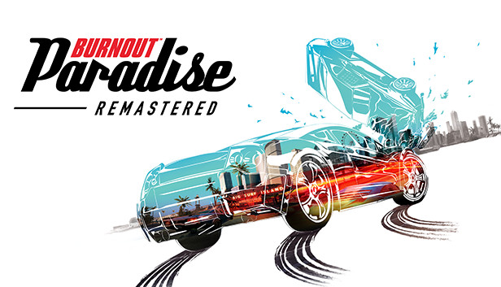

Burnout Paradise biến cuộc đua thành một sân chơi lớn. Chúng ta hãy nhìn lại để đánh dấu kỷ niệm của tác phẩm kinh điển được yêu thích này
Burnout Paradise đã tổ chức lễ kỷ niệm 15 năm vào tuần này, vào ngày 22 tháng 1 năm 2023. Dưới đây, chúng ta hãy xem cách tiếp cận độc đáo của trò chơi mang tính biểu tượng đối với cuộc đua thùng đã giúp thiết lập tiêu chuẩn trong nhiều năm tới.
Hầu hết thời gian trong trò chơi đua xe arcade, bạn sẽ thấy một chiếc cần câu nóng bỏng lao xuống vùng nông thôn, với một khung cảnh tuyệt đẹp ở phía xa - một khung cảnh không gì khác hơn thế: một khung cảnh xa xôi mà bạn sẽ không bao giờ chạm tới. Thay vào đó, bạn chỉ có một con đường duy nhất để đi theo, với khung cảnh xa xôi đó đóng vai trò thay đồ cho cửa sổ.
Kiểu bối cảnh kiểu Hollywood đó là bối cảnh cho phần lớn các tay đua arcade, một thể loại về việc nhảy vào một chiếc Corvette, bay trên đường, rồi nhảy ra ngoài vài phút sau đó. Bạn có thể chơi bao nhiêu cuộc đua mà bạn muốn, nhưng niềm vui sẽ không bao giờ đi xa hơn thế.
Có một lý do cho điều đó. Hộp cát lộn xộn và không cho phép thiết kế chặt chẽ. Các tay đua arcade di chuyển cực kỳ nhanh - đặc biệt là với nhiều người chơi - khiến sự kết hợp của cả hai "cực kỳ khó [để phát triển]", theo Iain Angus, cựu lập trình viên trò chơi chính của Criterion. "Thực sự, thực sự khó khăn."
Burnout Paradise , một trò chơi trong đó bạn khám phá một thị trấn hư cấu ở California tên là Paradise City, tất cả chỉ xoay quanh việc lộn xộn trong khi gây ra một mớ hỗn độn. Chân trời còn rất xa khi Guns N' Roses bắt đầu chơi
"Đó là một trò chơi mà bạn có thể tham gia và thư giãn, bạn có thể đi và lái xe xung quanh và quậy phá [giao lưu] và trò chuyện với nhau," Angus nói trong một cuộc phỏng vấn năm 2014 . "Trong khi hầu hết các trò chơi khác đều như vậy, chúng tôi thực hiện cuộc đua này, cuộc đua kia, cuộc đua kia và đó là một loại tốc độ khác và một phong cách trải nghiệm trực tuyến khác."
Tay đua thế giới mở cực kỳ nổi tiếng của Criterion đã bước sang tuổi 15 vào ngày 22 tháng 1 năm 2023 và tác động của nó đối với thể loại này vẫn có thể cảm nhận được cho đến ngày nay. Alex Nevarro đã gọi Paradise City là một "khái niệm được thực hiện tuyệt vời" chưa từng thấy trong trò chơi Burnout trước đây trong bài đánh giá GameSpot của anh ấy . Nó tạo tiền đề cho những gã khổng lồ đua xe như Need for Speed và Forza Horizon chuyển sang thế giới mở nhiều năm sau đó.
Theo Angus, các tay đua khác—Test Drive Unlimited đã đặt nền móng cho Paradise—đã cho các tay đua phóng to vòng quanh thế giới mở trước đây, nhưng không tay đua nào nắm bắt được tinh thần của thể loại này như Paradise đã làm. Chúng thường là những thế giới rộng lớn với rất ít việc phải làm và việc lái xe không bao giờ gây ảnh hưởng nhiều như khi bạn đâm chiếc Carson GT của mình ngay vào một bên hẻm núi sau khi rẽ quanh một trong những góc cua gấp của Thành phố Paradise. Cảnh tượng, đôi khi, là quá đủ.
Toàn bộ ý tưởng về Paradise bắt đầu như một giải pháp cho một trong những vấn đề phổ biến nhất mà người chơi gặp phải khi tham gia vào một cuộc đua điện tử: dành quá nhiều thời gian ở sảnh đợi.
"Chúng tôi nhận ra rằng mọi người ở trong phòng chờ lâu hơn gấp 5 lần so với khi họ thực sự tham gia cuộc đua," Mark Webster, nhà sản xuất Paradise cho biết trong một cuộc phỏng vấn với The Verge . Nhóm của anh ấy đã theo dõi cách người chơi tương tác với Burnout Revenge. "Vì vậy, chúng tôi nói, 'Chà tại sao sảnh này không phải là một thế giới trò chơi?' Chúng tôi nghĩ rằng đó là một ý tưởng hay, và hóa ra đó lại là một ý tưởng thực sự hay.”
Paradise City, đầu tiên và quan trọng nhất, được thiết kế như một sảnh đợi mà người chơi có thể nhảy vào và nhảy ra một cách liền mạch trong khi những người chơi khác tăng tốc qua các khu vực khác của thành phố.
Criterion nhận thấy rằng ý tưởng về sảnh thế giới mở phổ biến hơn các cuộc đua mà họ thiết kế. 90% người chơi đã chọn bay vòng quanh đô thị giống như Los Angeles mà không cần quan tâm đến thế giới. Rất ít người xếp hàng tham gia các cuộc đua hoặc các chế độ trò chơi ẩn dật khác.
Mặc dù đây không phải là trò chơi đầu tiên có tính năng này, nhưng thế giới mở đã ngày càng phổ biến kể từ khi Grand Theft Auto III ra mắt vào năm 2001. Phương pháp thiết kế hộp cát vẫn còn phổ biến cho đến ngày nay. Các nhà phát triển vẫn đang cố gắng xây dựng những cách mới, sáng tạo để đi qua các cảnh quan rộng lớn.
Paradise City là đường đua thế giới mở đầu tiên có cảm giác hoàn chỉnh, theo thế giới mở liền mạch là đường đua đầu tiên làm cho phong cách chơi đó hoạt động. Nhiều nhà phát triển đã sử dụng nó làm nguồn cảm hứng cho các trò chơi sau này, bao gồm DiRT và Need for Speed: Most Wanted.
"Tôi vẫn không nghĩ có ai nắm bắt được loại kích thước gói phù hợp như Paradise đã làm," giám đốc thiết kế trò chơi của DiRT, Paul Coleman, cho biết trong một cuộc phỏng vấn với Nhà phát triển trò chơi . "Quy mô của thành phố và khu vực xa trung tâm phù hợp với những gì Paradise định làm. Hầu như ở mỗi giao lộ đều có việc phải làm."